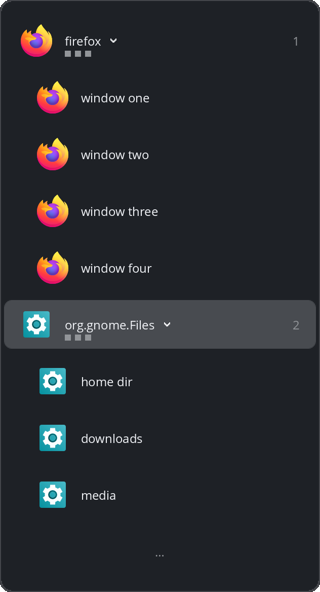

Hold Alt, tap Tab.
Workspace-isolated Alt+Tab for COSMIC
The switcher lists and cycles only the windows on the current workspace, so nothing you parked elsewhere leaks into your focus.
cargo install cosmic-ext-airlock
airlock installRequires a COSMIC Epoch desktop session and Rust 1.93+, plus pkg-config and the Wayland/xkbcommon headers to build (per-distro list in the README). What the installer writes, and how to undo it.

grouping = true).Why not the built-in switcher
The built-in switcher
Lists every window on every workspace, most recently used first; the request for a workspace filter (pop-os/cosmic-epoch#1777) is still open.
Airlock
Airlock is that filter as a standalone app, with no compositor
patch; airlock install --uninstall restores the
built-in switcher.
The cost
The switcher path Airlock replaces (cosmic-launcher's cosmic-switch-less) measured about 170 MB RSS. Airlock's daemon: 8.0 MB (see Performance).
How it works
Hold Alt, tap Tab: an overlay lists the current workspace's windows, most recently used first. Rows are the application's themed icon (the same pipeline the COSMIC launcher uses) beside its title.
| Key | Action |
|---|---|
| Hold Alt, tap Tab | Open the overlay |
| Tab / Shift+Tab | Step forward or back; arrow keys work too |
| Release Alt | Switch to the selection and dismiss |
| Enter | Confirm without releasing Alt |
| Escape | Dismiss without switching |
| Ctrl+1…9 | Switch to the Nth window at once, like a click; each row shows its digit |
| Alt+` | Cycle the current application's windows (Alt+Shift+` steps backwards) |
| Alt+Esc | Jump to the second-most-recent window, no overlay |
| Alt+- | Close the selected window; the card stays up for the next |
Pointer: hover moves the selection, click switches, the wheel steps the list, and resting on a window row reveals an × that closes it. A quick tap, released before the overlay appears, still switches.
Type to filter
While the card is up, typing narrows it to the windows whose title or app name matches. How it narrows.
Group by app
grouping = true turns the list into a per-app
tree; an entry commits its app's front window, and →
expands it.
The tree's keys.
A horizontal band
layout = "horizontal" lays the same list out as
a wide band of tiles, stepped with Left/Right.
Both cards.
Card width
width and min-width hold either
card at a floor: "auto" sizes from content,
"100%" fills the screen, or set a pixel count.
Width.
Close from the card
Alt+- or the icon's × badge closes a window without leaving the gesture. What closes what.
Real type
Titles render in the desktop's own interface font, Unicode
included; font overrides the family and
font_size the size (8–24 px).
Font size.
Sticky windows appear on every workspace, minimized windows appear on none, and a window on another workspace can never be reached through Airlock. A workspace can opt into the global list; see Settings.
Every key, pointer rule, and card measurement is documented in how the switcher behaves.
Performance
Measured on hardware on 2026-11-02 (method: hardware checklist).
| Measurement | Target | Airlock |
|---|---|---|
| Daemon RSS / threads | < 30 MB | 8.0 MB / 1 thread |
| Warm press round-trip | < 50 ms | < 10 ms |
| Cold press (respawn + settle) | n/a | ~340 ms |
Install
cargo install cosmic-ext-airlock
airlock installRequires a COSMIC Epoch desktop session and Rust 1.93+.
cargo install compiles from source and cannot install
system libraries — add the build packages once. On
Pop!_OS/Debian/Ubuntu:
sudo apt install build-essential pkg-config libwayland-dev
libxkbcommon-dev; other distros are listed in the
README.
On another compositor the daemon exits with a diagnostic naming the
missing protocol. airlock install is the complete
setup (keybind takeover, app icon, desktop entry, commented starter
config, all user-level);
airlock install --uninstall restores the built-in
switcher byte-for-byte.